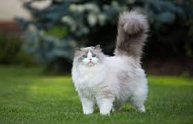

페르시안

페르시안 고양이 정보
페르시안 고양이는 우아한 외모와 차분한 성격으로 유명합니다. 아름다운 외모와 고상한 성품을 가지고 있습니다.
페르시안 고양이 특징과 성격
특징
성격
털이 길고 푹신함
차분하고 고상한 성품
풍부한 털의 다양한 컬러
사교적이고 인내심이 강함
큰 눈과 코
우아하고 우아한 행동
페르시안 고양이 주의사항
적절한 털 관리 및 브러싱:
페르시안 고양이의 털을 규칙적으로 관리하고 브러싱하여 털빠짐을 예방하세요.
규칙적인 건강 검진:
정기적인 건강 검진을 통해 고양이의 건강 상태를 확인하세요.
스트레스를 줄이기 위한 환경 조성:
안정된 환경에서 생활할 수 있도록 노력하세요.
규칙적인 식이 및 영양 공급:
고양이에게 적절한 식이를 제공하여 영양 균형을 유지하세요.
홈으로 돌아가기